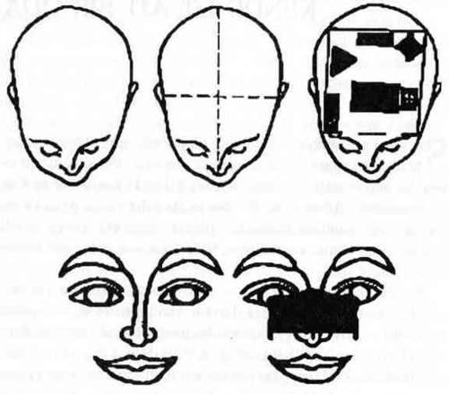

KENDİNİZE AİT BİR ODA
Sezgisel yorumlamada başarılı olabilmek için yapılması gereken ilk şey sessiz bir mekan yaratmaktır. Pek çok terapi ve meditasyon öğretisi insanın zihinsel anlamda kutsal bir mekan yaratmasına yardım eder. Biz bir adım daha öteye gidecek ve bu sığınağı şimdiki zamanda, günlük hayatımızda ve kendi bedenimizin içinde yaratacağız. Kafanızın içinde bir oda hazırlayacağız.
Kafanızın içindeki bu oda öyle ulaşılmaz ve özel bir yer olacak ki, oradaki huzura başkalarının yardımından ya da içinde bulunduğunuz fiziksel çevreden bağımsız olarak kavuşacaksınız. Hatta uzun süreli sessizliklere bile ihtiyaç duymayacaksınız. Bedeninizin içinde her zaman yalnız başına kalabileceğiniz bir yeriniz olacak. Kafanızdaki oda, içeride olanların kontrolünü size vererek bilincinizin bedeninize çapa yapmasına yardım edecektir.
Pek çok kişi için bedenin içinde varolmak yepyeni bir deneyimdir. Çoğumuz zamanımızı geçmişte, gelecekte, çatışmalarda ve “keşke”lerde geçiririz. Kafamızda yaratacağımız oda bize farkındalığımızı toparlama ve bütünleşme şansı verir.
KAFANIZIN İÇİNDEKİ ODAYI YARATMAK
Odayı şöyle yaratacaksınız: Burnunuzdan başınızın arkasına doğru hayali bir çizgi çekin. Şimdi başınızın üstünden geçen, sağ kulağınızdan sol kulağınıza kadar bir çizgi çekin (Şekil 1).
Bu iki çizginin birbiriyle çakıştığı nokta sizin odanızın merkezidir. Odanızın zemininin başınızın alt tarafında; burnunuzun ortalarına doğru bir yerde merkezlenmesine ve daha yüksekte kalmamasına dikkat edin. Şayet zemin daha yükseğe merkezlenirse baş dönmesi yaşayabilirsiniz.

Şekil 1. Kafanızın İçindeki Odayı Yaratmak
Şimdi odanın dört duvarını, zeminini ve tavanını oluşturun, elbette hepsi de kafanızın içinde duruyor. Odanın ön tarafında iki pencere (gözleriniz) ve bir kapı olacak. Çalışmaya başladığınızda, bu kapının dış tarafına “Lütfen rahatsız etmeyin” yazısı asın.
Şimdi işin en eğlenceli kısmına geldik. Odayı istediğiniz tarzda döşeyebilirsiniz ama unutmayın burası sizin kutsal mekanınız; küçük tapınağınız. İçini gürültü patırtıyla doldurmayın ya da içeriye bililerine davet edeceğinizi düşünerek hazırlık yapmayın. Bu oda başka insanlara kesinlikle yasaklanmıştır. Duvarlarına bir iki güzel tablo asabilir; içeriye ılık su dolu bir küvet ya da bir şömine yerleştirebilirsiniz. Belki de birkaç tane hayvan heykelciği koyarsınız. Odanızı bir Mısır tapınağına; kristal bir mağaraya; eski bir İngiliz şatosunun kütüphane salonuna ya da bir Mezopotamya çadırına dönüştürebilirsiniz. Hayatınızda zaten varolan bir odayı kopyalamayın; bunun yerine odanızı bir hayal mekanı haline getirin.
Gözlerinizin penceresinin önüne kendiniz için (başka biri için değil) rahatça oturabileceğiniz şık bir koltuk ya da kanepe yerleştirin ve buradan, gerçekten hoşlanacağınız bir manzaranın göründüğünü hayal edin. Önünüzde uzanan bu manzaraya bakarken huzur bulacak ve fiziksel olarak sizi çevrelemese bile doğayla bağlantı kuracaksınız. Trafik keşmekeşinin içindeyken bile güzel bir bahçeye; bir ormana ya da çölde yükselen mehtaba bakıyor olabilirsiniz.
Odanız hazır olunca rahat koltuğunuza oturun ve gözlerinizin arkasından dışarı bakma alıştırması yapın. Önce bu odada bir dakika kadar kalabilmeyi deneyin ama henüz bunu yapamıyorsanız sakın endişelenmeyin. Bedenin içinde kalmayı öğrenmek için biraz alıştırma yapmak gereklidir. Benim de yaklaşık yirmi senedir böyle bir odam var ve bazen günlerce hatta haftalarca odama uğramadığım da oluyor. Bunun farkına vardığımda kendimi tokatlamıyorum; sadece odama geri dönüyorum. Yine de en iyi işlerimi bedenimin dışında geçirdiğim zamanlarda çıkarmadığımı daima hatırlıyorum.
Odanızda olup olmadığınızı anlamanın en kolay yollarından biri elinizi yüzünüze götürüp parmaklarınızla burnunuza bastırmanızdır. Dikkatinizin başınızın arkasına doğru toplandığını hissederseniz muhtemelen zaten odanızda değildiniz demektir. Bunu anlamanın bir başka kestirme yolu da burnunuzu ve kirpiklerinizi gözünüzü odaklamadan görüp göremediğinizi kontrol etmektir. Eğer farkındalığınız gözlerinizin arkasında yoğunlaşmışsa burnunuz ve kirpikleriniz daima görüş alanınızda olacaktır.
Gözlerinizin arkasında ve odanızda kalmayı deneyin. Şayet orada olmayı hiç istemediğinizi hissediyorsanız o zaman konforu sağlayana kadar odanın dekorunu değiştirin. Gün boyunca odanızın ve duygularınızın nasıl değiştiğini kontrol edin. Odanızı tekrar tekrar değiştirmekten korkmayın ve unutmayın ki odanızı istediğiniz kadar fantastik ve zengin bir yer haline getirmekte özgürsünüz. Nasılsa bedava!
Hemen herkes yaşanacak en iyi zaman diliminin “şimdi” olduğunu duymuştur. Gerçek gücün şimdiki zamanda olduğunu; geçmişin hatıra geleceğin ise hayal olduğunu o kadar çok duydum ki. Ancak bunların hiçbiri kendi bedenimin içine girene kadar (çocukken uğradığım bir saldırı sırasında bedenimi terk etmiştim; Rebuilding the Garden, “Bahçeyi Yeniden İnşa Etmek” isimli kitabımda bu konuyu anlattım) bana bir şey ifade etmemişti. Kafamın içindeki oda beni gerçek dünyaya çapaladı çünkü bana, ilk kez bilinçli olarak hatırlayabildiğim, içinde tek başıma, kontrollü ve huzur içinde olduğum bir mekan vermişti. Öğrencilerimden biri odasını kontrol merkezi olarak adlandırıyor. Bu tanımlamaya katılıyorum. Odanızda olmak, bir uçağın kokpitinde ya da bir gözlem kulesinin tepesinde veya bir tahtta olmaya benzer. Bedenlerimizin içinde sınırsız bir sessiz güç bulunur.
“Şimdide” olmak teorisine gelince, zaten hepimiz sadece şimdide varolabilen bir aracın içinde yaşıyoruz. Bedenlerimiz geçmişte yaşayamaz; geleceğe yolculuk edemez; sadece şimdiki anın içinde varolabilir. Eğer bedenimizin içine tırmanır ve gözlerimizin ardında oturursak şimdiki anda yaşıyor oluruz. Bu kadar basit. Tüm güç şimdiki anda varolduğuna göre o zaman bedenimizin içinde olmak bize yaşamanın, gelişmenin ve iyileşmenin gerektirdiği gücü verecektir.
Odanızı yaratmakta zorlanıyorsanız, bir oda yaratmış gibi yapmanız tamamen kabul edilebilir bir davranıştır. Kafanızın içinde bir oda yaratmak bedeninizle uzun zamandır kurduğunuz ilk bilinçli ilişki olabilir. Şuranızdaki ağrı, oradaki adam, şu ya da bu duygular ve buna benzer konularda bedeninizin genellikle size söyleyecek bir yığın sözü vardır. Bu vıdı vıdı bir süre sonra azalacak ve topraklama adı verilen teknik (sonraki bölüme bakın) bedeninizin sakinleşmesine yardımcı olacaktır. Şimdilik, gözlerinizin arkasında bir yer açmanız; oraya hoşunuza giden nesneler koymanız; rahat bir koltuk edinmeniz ve becerebildiğiniz kadar uzun bir süre o en sevdiğiniz doğa manzarasına bakmanız son derece yeterlidir.
Kafanızın merkezinde oturuyor olmanın henüz size doğal gelmeyeceğini bir kez daha tekrarlamamda fayda var. Kendimizi odaklamaya alışık değiliz. Bilincimizin odak noktası aklınıza gelebilecek her yer olabilir. Eğer iyi bir atletseniz ya da bir matematikçiyseniz bilinciniz başınızın üst kısmında bir yerlerde ya da alnınıza doğru bir noktada dolaşıyor olabilir ama aynı zamanda başınızın arkasında ya da omzunuzun yanında da olabilir. Bilincinizin bir yerden diğerine geziyor olması normal ve sağlıklıdır. Bilinciniz istediği yere gidebilmelidir ama sizin onunla farkındalıklı bir bağınız olmalıdır. Gerek duyduğunuzda bilincinizi istediğiniz yere odaklayabilmelisiniz.
Bilinciniz, odak noktasını ve yerini değiştirmeyi zaten bilir. Sizin okuma yazma odağınız; sanatsal faaliyet ya da müzik dinleme odağınız; yemek yapma odağınız; yemek yeme odağınız; yatmadan önceki an odağınız; denge odağınız vb zaten vardır. Bilinciniz nasıl hareket edeceğini ya da kıpırdamadan nasıl duracağını bilir. Bu meditatif odaklanma alıştırması da eğer bilinciniz için odaklanacak yeni bir merkez yarattığınızı anlarsanız çok basitleşecektir.
Bilincinizi bütün gün kafanızdaki odada kalmak için zorlamamalısınız. Bu sadece suni ve sağlıksız bir durum değildir, aynı zamanda da imkansızdır. Bilinciniz meditasyon için kendinizi odaklamaya ihtiyaç duyana kadar serbestçe dolaşmakta özgür olmalıdır. Ardından da gözlerinizin arkasında kendisini odaklamaya hazır olmalıdır. Yardım etmek için elinizi burnunuzun ucuna bastırarak bilincinizi odanıza çağırabilirsiniz. Bu hile değildir, ben bunu hep yaparım. Meditasyonum bittikten sonra bilincimin odağını nereye isterse gitmesi için de salıveririm. O ne yapacağını bilir.
Azar azar çalışarak odanızı yaratın (mağara, taht odası, kule, çadır ya da her ne istiyorsanız) kafanızın içine giremiyorsanız bile en azından bir temel atın. İşiniz zamanla kolaylaşacaktır.